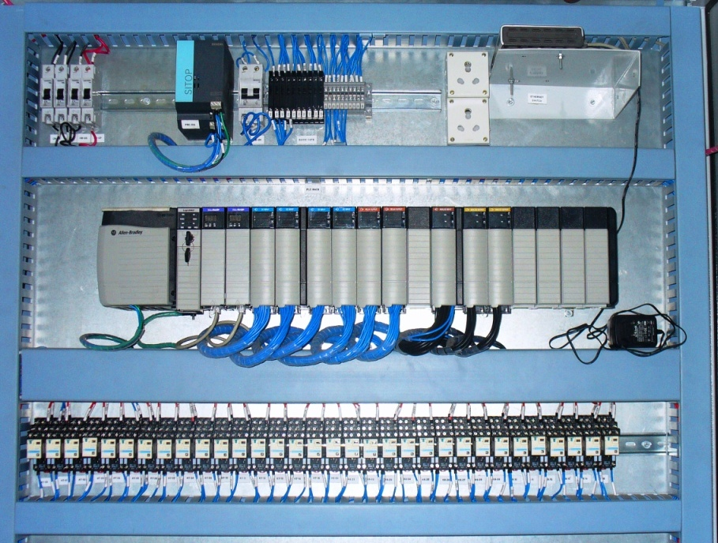
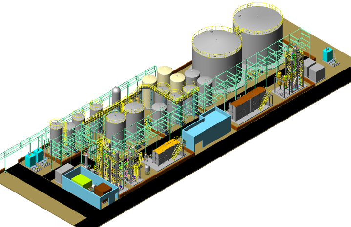

Trans Tech's promoters earlier worked with Tata Honeywell Ltd. (now, Honeywell Automation India Ltd.). Both of them have significant experience on execution of Refinery, Power Plant DCS Projects. Trans Tech's Automation team has expertise on all leading platforms of PLC, HMI & SCADA.
Our Services include :
Our expertise :
Our expertise in SCADA includes following :
Our domain expertise include :
Trans Tech has developed a software application in .Net to view control system's real time data via web using standard browsers. We offer 24 hours on line support using latest tools of Desktop Sharing and Video Conferencing.
Manufacturing Execution Systems :
We offer software development services such as :
We provide these services through our associate company, VASP Solutions LLP.
Please visit www.vaspsolutions.com to know more about services and offerings.
Our multi-disciplinary engineering staff with chemical, mechanical, instrumentation, electrical & civil engineering expertise, enables us to develop client's concept to fruitful completion. Trans Tech has served refinery, power, chemical and pharmaceutical projects all over the world. We have expertise in Waste Water & Water Treatment Plants, Distillation & Solvent Recovery Systems, Adsorption & Absorption Systems, Pilot Plants, Customized Package Skids, Special Purpose Machines and Residential, Commercial & Industrial Properties.
Process :
Piping & Mechanical :
Civil & Structural :
Instrumentation & Electrical :
Trans Tech Projects has expertise in designing modular skids such as pilot plants, solvent recovery systems, washing systems , Clean In Place Units, adsorption systems, scrubbing systems, desalination systems, filtration systems. Trans Tech has successfully provided services for projects with high temperature, high pressure applications. We can help customer in developing the concept to reality using our strength in process design, detail engineering, automation & control. The skids can be designed considering standard container dimensions so that it can be easily shipped across the globe. Our process engineers prepares a detail P&I diagram & equipment layout. Based on the same our designers prepares precise 3D model followed by structural steel, piping isometric or spool drawings with weldmets. The same can be viewed as a movie which gives a very good visualization & understanding for fabrication & assembly team. Our Automation team design control panel with layouts, wiring schematics and provide PLC/HMI programming as per the customer's requirement. We assist customer in testing of the programs so that so that the skids becomes a plug & play activity at site.
We have experience custom design & reverse-engineering products for different industries and applications. Whether your goal is to develop a cost-saving alternative or equivalent product or to improve efficiency, we demonstrate all of the attributes you need in a source for engineering and design support.
Product Development :
Detail Design :
Industry Domains :
Computer Aided Design :